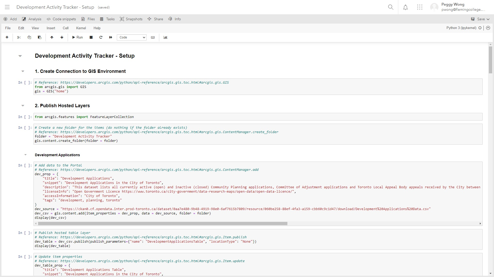
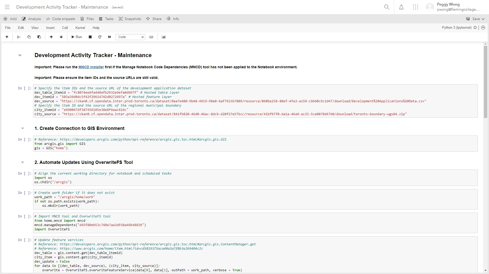
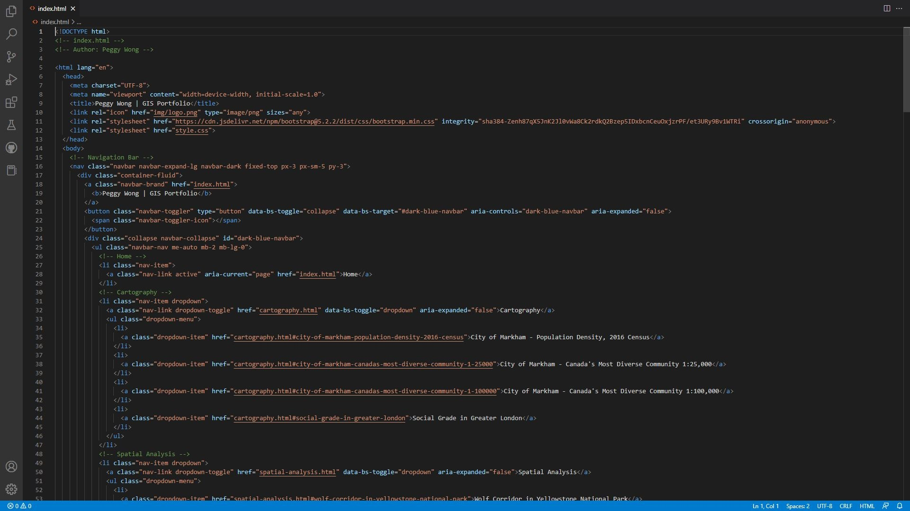

Development Activity Tracker - City of Toronto
In the collaborative project with the City of Toronto, I was responsible for developing programming scripts to pre-process the data and automate the updating process using ArcGIS API for Python. The setup script involves creating a folder for the project items, publishing hosted feature layers, sanitizing problematic data, visualizing development activities using Spatially Enabled DataFrame, publishing and configuring web maps, and sharing the project items with the public. The maintenance script involves installing MNCD (Manage Notebook Code Dependencies), running OverwriteFS tool, sanitizing problematic data, visualizing development activities using Spatially Enabled DataFrame, and setting up scheduled tasks to run the script daily. It was hosted on ArcGIS Notebooks to check the updates on the City of Toronto Open Data Portal automatically and minimize the maintenance effort of the staff.
 GIS Portfolio
The GitHub website presents my GIS projects to showcase my talents and skills in a professional manner. Bootstrap v5.2.2 and jQuery 3.6.0 were used to get the compiled CSS and JavaScript to build the website easier, and additional CSS was created to allow further customizations.
